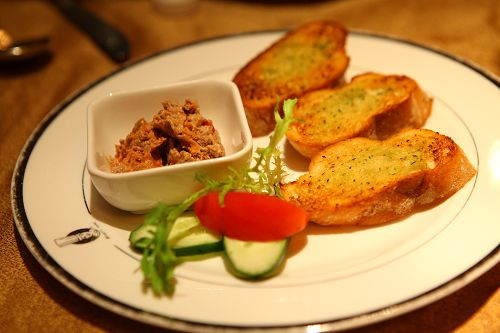
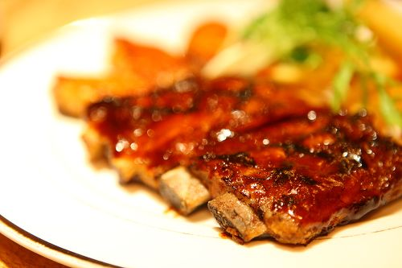
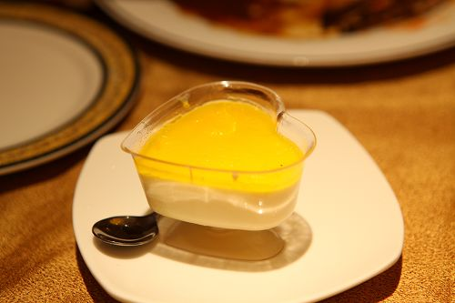
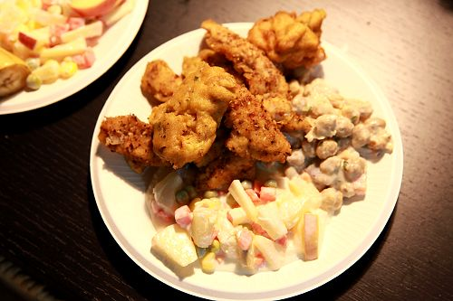

吃的愿望 @ Aug 22, 2010
其实我想写昨晚看的那部GAY的电影，blog编辑界面出现差错，写了半截的文字丢了，兴致全无，改贴图吧。
某晚，路过一卖鸡蛋饼的路边摊，看摊主将面摊在铁板上，过一会儿把打好的鸡蛋从面上的孔倒入饼里。加上酱、火腿肠等配料一起出售，2元。我说我什么都不要，只要饼，人家也不客气，价格一点没降。拎回家往饼上涂了六味居的腐乳，卷起来，就着白米粥一起吃，那个香啊。
上周末特想吃西餐，南京好的西餐馆屈指可数，新华书店对面的NAPOLI西餐馆现在改为面包店了。东西不错，就是餐馆开的位置不好，没地方停车，会影响销售。结果吃西餐的愿望在本周末的亨利之家解决，差强人意啊。餐毕，这才想起钟山高尔夫的西餐还不错，下回再去吃。





巴基斯坦邻居晚上聚会，送来他们的食物。刚刚饱餐的人还是笑纳了，好奇每天弥漫出来的烹饪气味儿，都是哪些食物？用怎样的烹饪方式制成的？
“你们是不是特别怕狗？”我问。
“不，是印度人怕狗，不是我们。”

9 Responses to “吃的愿望”
2010-08-22
这样岂不是可以学到地道的巴基斯坦菜~~~~~ ^^
2010-08-22
他们用了好些香料啊～食品简单：炸鸡肉，熟青豆、玉米、苹果、胡萝卜、香瓜和葱拌的色拉，土豆条青椒用面粉裹着炸成饼状。味道还不错。
2010-08-22
和巴基斯坦人长期共邻是幸福的。
老印们到那都是异香扑鼻，没点功力是耐不住的。
想当初和妹妹要去印度店买食物，她老公对之如榴莲，我一进门也跑出来了。
巴基斯坦其实就是南印度，食物香料要淡许多
2010-08-22
千万不要在巴基斯坦邻居面前夸印度啊，他们是死对头。呵呵。
2010-08-23
哈哈，结尾让我想起上语言班时常会被外国人问的问题
“你们中国人是不是会吃狗肉？”
“没的事，那是韩国人。”
2010-08-23
印度人真的讨厌狗，周末带TOBY去超市，两印度夫妇看到TOBY像看到瘟神一样，TNNDX
2010-08-23
这邻居处的可真好。
以及，亨利之家，我就没觉得好吃过。哎，下回还是去吃我爱的尼泊尔菜。
2010-08-25
Indian foods have very bad smell. When I lived at university apartment building, there were a lot of Indian students and Chinese students living at that building. The smell of that building is very bad.
2010-08-25
==对食物的精致光影已经免疫==
这几日反复来看茶茶N次,突然发现:自己竟然没有仔细看过这篇blog中的任何一张照片.现在的网速已能瞬间打开首页,“唰”,一下子就将食物的精美的感觉透过视网膜打入脑袋,接下来眼光立刻开始迅速搜寻文字……
或许某天茶茶姐用普通卡片机照同样的食物,对我会有不同结果.
我得去赶紧换换眼镜,换换眼睛,换换眼神,换换视角…
Leave A Reply
存档只读，评论已关闭。